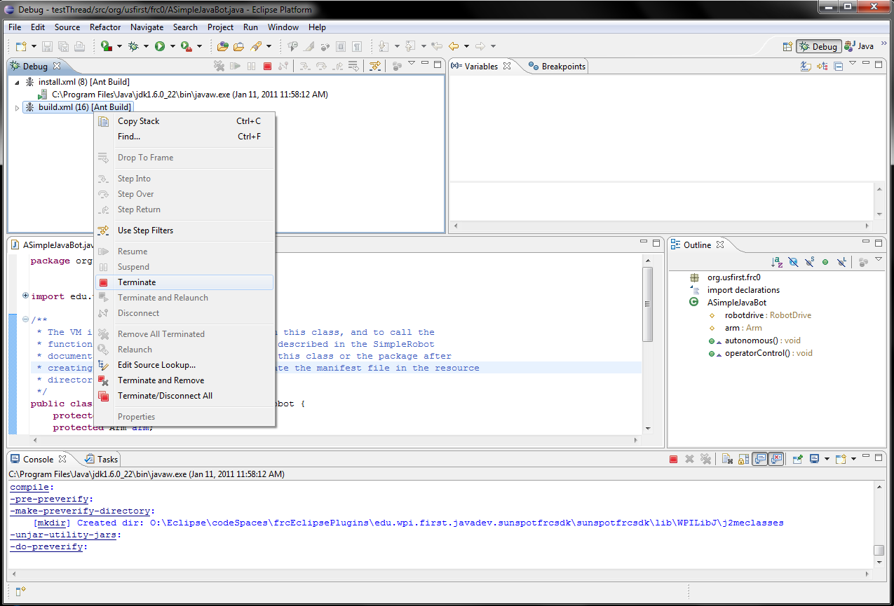

To manually end running FRC processes which may be preventing new deploys from succeeding, first switch to the debug perspective. Then, find any process called "build.xml" or has "[Ant Build]" in the name in the "Debug" window, right click it, and select terminate.
